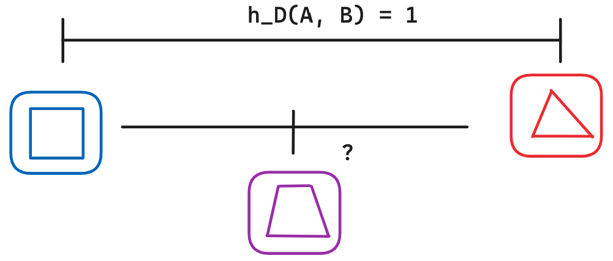

Introduction
The Hausdorff distance is a metric used mainly in computer vision and computational geometry to assess the similarity between two objects (set of points or polygons for example). Imagine two shapes at a H distance of 1. Now imagine what could be the shape that sits exactly in the middle of them, what is the shape that has the same Hausdorff distance to A and to B ? Does an intermediate shape like that always exists ? Is is convex, correct ? How can we interpolate such shape ? This work will address this issue and go further by generalizing this concept.
